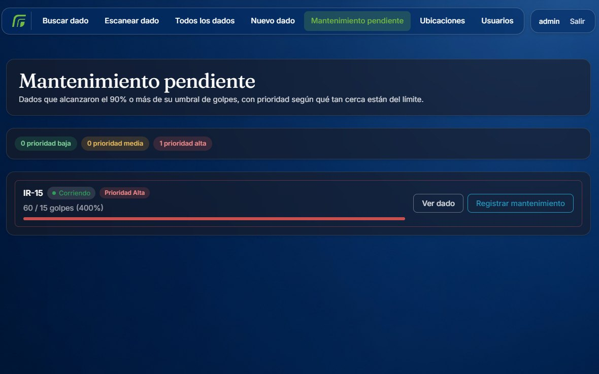
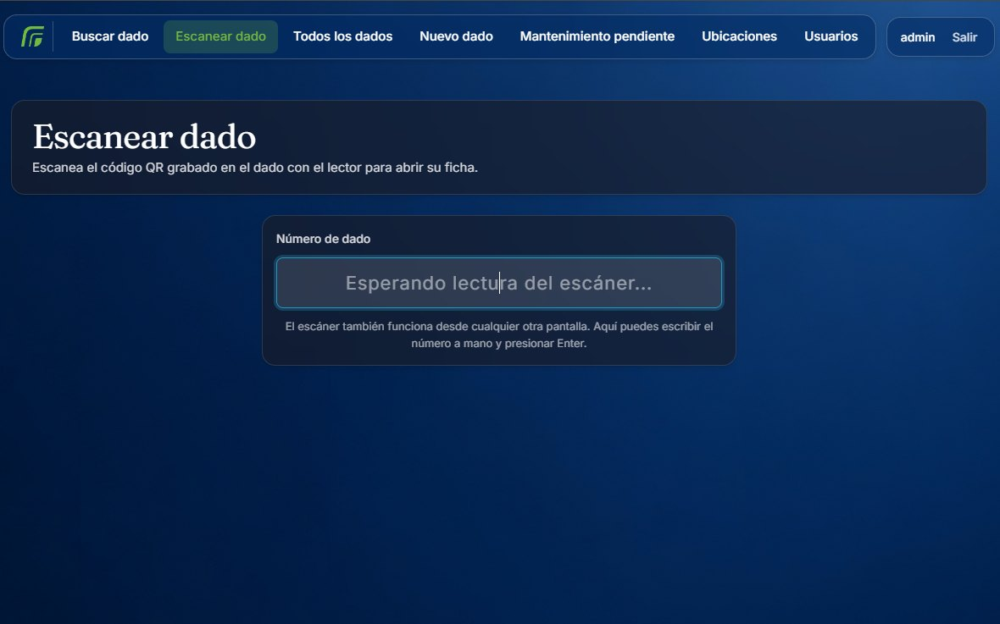
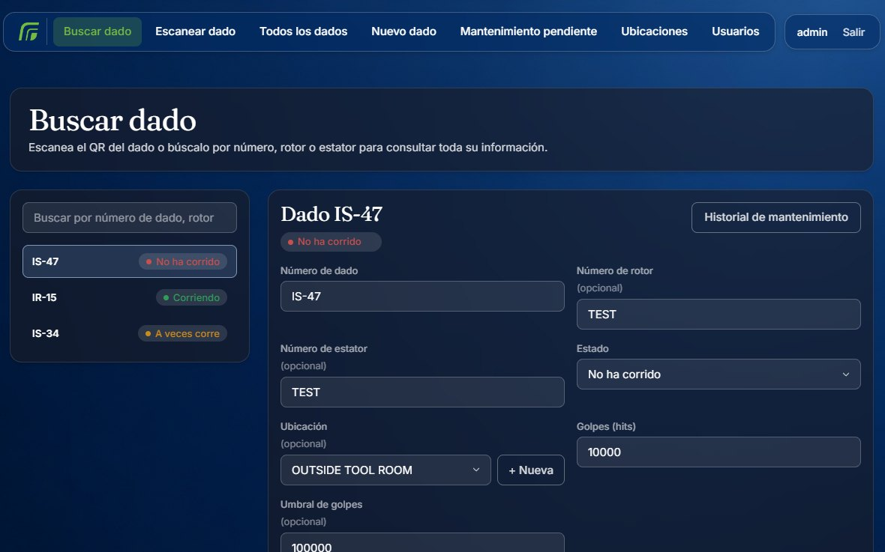
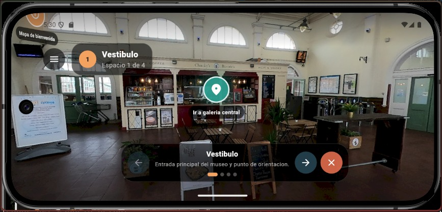
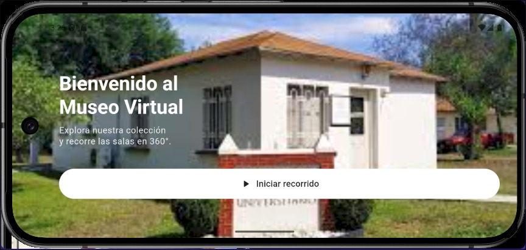
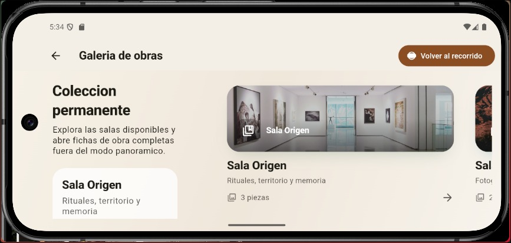
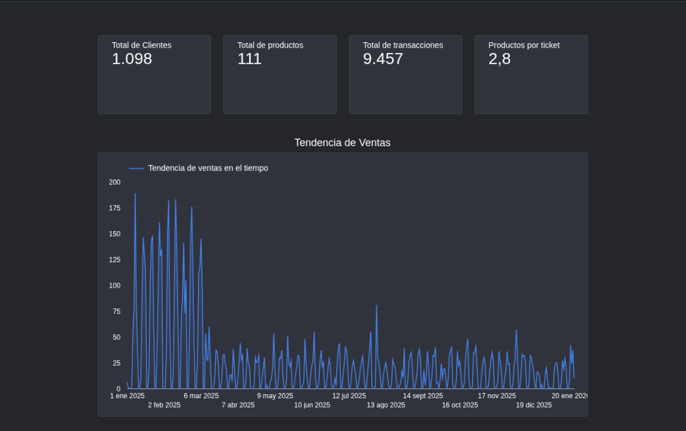
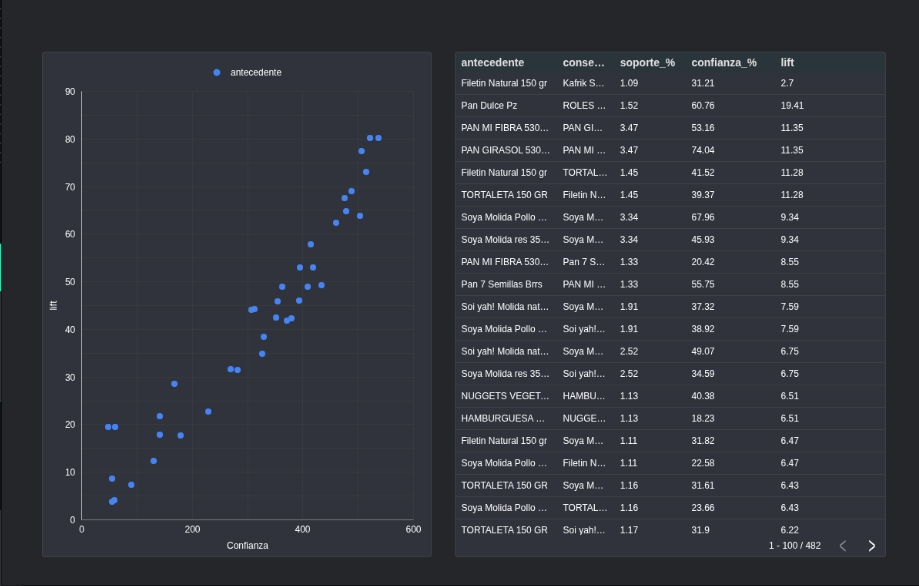

Estudiante de Ingeniería en Sistemas Computacionales en la Universidad de Montemorelos (FITEC). Residencias profesionales en el área de ingeniería de Regal Rexnord, McAllen, TX.
Ver proyectos ›Desarrollo aplicaciones web con NestJS, Angular y PostgreSQL, y aplicaciones móviles con Flutter. Mi lenguaje base es Java, que uso con Spring Boot.
En la Dirección de Sistemas de la universidad trabajé sobre una arquitectura de microservicios y migré servicios de Spring Boot a NestJS.
Los dados de producción se controlaban de forma manual. No había un registro único que indicara dónde estaba cada dado, quién lo usó por última vez ni cuándo le correspondía mantenimiento.
Esto generaba tiempo perdido en búsquedas, registros duplicados u obsoletos y mantenimiento correctivo en lugar de preventivo.
Revisión física de los dados para separar activos, obsoletos y duplicados antes de digitalizar. El sistema arranca con datos limpios.
Cada dado lleva un código QR grabado. Al leerlo con el escáner, desde cualquier pantalla, se abre su ficha con ubicación, estado, golpes e historial.
Una API en NestJS sobre PostgreSQL atiende al frontend en Angular. Administrador, operador y mantenimiento tienen acciones distintas.
Cuando un dado alcanza el 90 % de su umbral de golpes, aparece en «Mantenimiento pendiente» con prioridad baja, media o alta según qué tan cerca está del límite.



Un museo necesitaba poder recorrerse a distancia. Una galería de fotografías no comunica el espacio ni el orden de la visita.
Desde la pantalla de bienvenida se inicia un recorrido 360° por cuatro espacios. Los puntos turquesa llevan a otro espacio y los naranjas abren la ficha de una obra. Una barra inferior permite avanzar, retroceder o salir, y un menú lateral da acceso a la galería de obras, la configuración y la información del museo.
VirtualTourHotspot.navigation( id: 'galeria_a_pasillo', label: 'Pasillo lateral', targetSceneId: 'pasillo', longitude: 110, latitude: -10, tint: Color(0xFF2A9D8F), ),
lib/ ├─ app/ arranque en el tour 360° ├─ features/ │ ├─ virtual_tour/ visor, barra, menú, ficha │ └─ home/ galería de salas ├─ data/ escenas y hotspots demo ├─ services/ cliente de la API ├─ models/ ├─ l10n/ traducciones └─ widgets/



COLPAC tenía productos con baja rotación y buscaba moverlos sin depender solo de descuentos. Se analizaron las ventas de 2025: 9,457 transacciones de 1,098 clientes sobre 111 productos.
Analicé el historial de tickets para encontrar productos que se compran juntos y propuse paquetes que combinan un producto de baja venta con uno de alta demanda.
P(A ∩ B)P(B | A) = sop(A ∩ B) / sop(A)conf(A → B) / sop(B)

México y Estados Unidos.
dischead@icloud.com